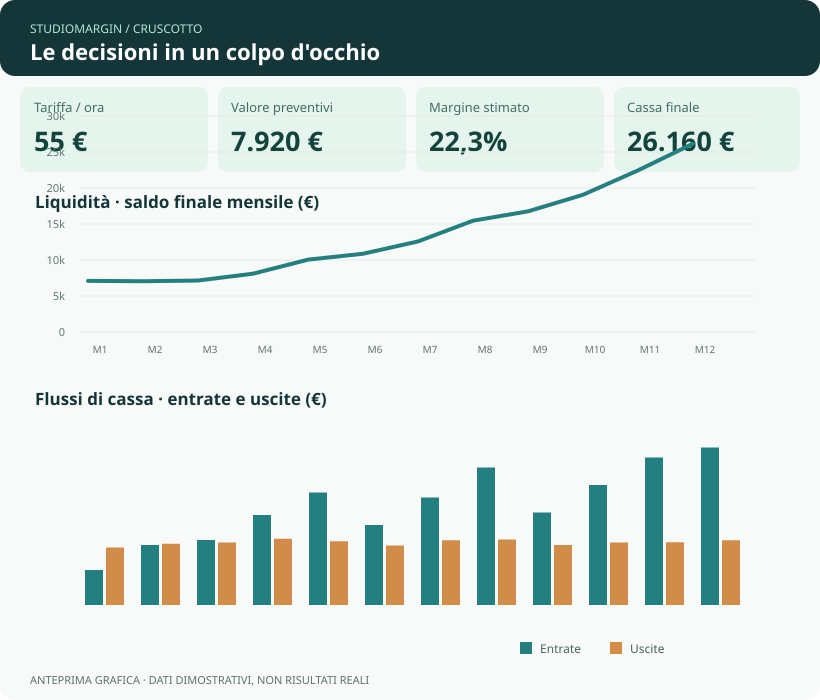
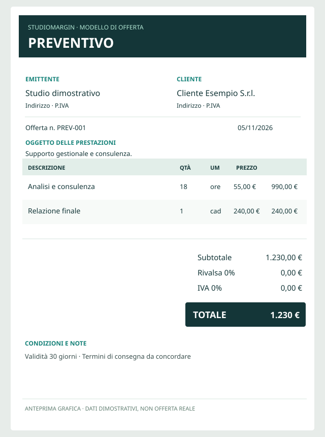

01 · TARIFFE
Quanto costa davvero un'ora?
Parti da costi annui e ore produttive per stimare una tariffa sostenibile.
StudioMargin aiuta freelance e studi a stimare tariffe, preventivi, margini e cassa. Il progetto sperimenta come strumenti creati con AI possano generare proventi netti da destinare alla ricerca sulla sclerosi multipla.
Ottieni StudioMargin · da 2 €Prezzo libero: minimo 2 €. È un acquisto digitale, non una donazione diretta ad AISM. Il progetto non è una campagna ufficiale dell’associazione.
| Attività | Ore | Preventivo |
|---|---|---|
| Consulenza A | 18 | 990 € |
| Progetto B | 32 | 1.760 € |
| Analisi C | 12 | 660 € |
StudioMargin v1.5 è disponibile come file XLSX su Gumroad. È uno strumento di pianificazione: verifica formule e stampa nel tuo ambiente Excel.
Prova la demo interattiva di tariffa e preventivo →
Parti da costi annui e ore produttive per stimare una tariffa sostenibile.
Calcola preventivi, costi stimati e margini delle singole attività.
Prevedi incassi, uscite e saldi mensili su un orizzonte di 12 mesi.
Anteprime illustrative basate sulla struttura del file Excel v1.5, con importi dimostrativi. I grafici nel file sono collegati ai dati inseriti, non a valori statici.

Tariffa, margine, preventivi, liquidità e confronto dei flussi mensili.

Compila cliente, prestazioni e quantità. Prova il modello stampabile gratuito.
Le schermate sono ricostruzioni grafiche di anteprima, non fotografie del software o esempi di risultati finanziari reali. La versione completa v1.5 è in vendita su Gumroad; le anteprime non sono schermate fedeli del workbook.
Possiamo trasformare prodotti digitali creati con AI in valore economico da redistribuire? StudioMargin esplora questa domanda ispirandosi liberamente ai temi narrativi di Wohpe di Salvatore Sanfilippo, senza alcuna affiliazione con l'autore o l'editore.
Impegno solidale: il promotore destinerà il 100% dei proventi netti realmente disponibili (al netto delle commissioni della piattaforma, eventuali rimborsi e obblighi di legge) a donazioni documentate ad AISM — Associazione Italiana Sclerosi Multipla, per sostenere la ricerca scientifica. I bonifici verranno effettuati per traguardi di cassa e rendicontati pubblicamente.
Le vendite generano inizialmente crediti, che non fanno avanzare la scacchiera.
Una casella si sblocca solo con disponibilità netta effettivamente accreditata, non con semplici promesse o saldi in piattaforma.
Ogni bonifico solidale sarà documentato. Nessuna donazione è ancora stata effettuata.
Stato al 10 novembre 2026: 0 vendite pagate verificate, 0 € di proventi ricevuti da Gumroad, 0 € donati; dotazione iniziale nominale della sfida: 1 €. I valori sono uno snapshot, non un contatore in tempo reale.
Leggi il registro pubblico della sfida.
Trasparenza legale: iniziativa indipendente, non promossa, autorizzata o patrocinata da AISM. L'acquisto su Gumroad è una vendita di prodotto digitale e non costituisce una donazione ad AISM: non attribuisce ricevute di donazione o benefici fiscali per l'acquirente. Il nome AISM indica il destinatario previsto delle future donazioni, non una collaborazione formale. La destinazione del ricavato non elimina gli obblighi fiscali e previdenziali eventualmente applicabili al promotore.
StudioMargin è disponibile su Gumroad. Puoi comunque provare i tool gratuiti e inviare feedback spontanei; non inviamo promozioni non richieste.
Prima di scrivere, consulta l'informativa privacy.
Sì, StudioMargin v1.5 è disponibile su Gumroad con prezzo libero, minimo 2 €.
Il progetto utilizza un file Excel .xlsx. La compatibilità con versioni e applicazioni alternative deve essere verificata.
Il prezzo minimo è 2 €. Puoi inserire un importo superiore per l’acquisto del file digitale. Non è una donazione diretta ad AISM.
Gumroad gestisce l’ordine e la consegna del file XLSX. Non si tratta di una donazione diretta a un ente benefico.